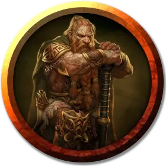

Дварфы Клана Боевого молота
Battlehammer Dwarf
Средний Гуманоид (Дварф), законно-добрый

Класс Доспеха 13 (кожаный доспех)
Хиты 16 (3к8 + 3)
Скорость 25 футов
| мод | спас | ||
|---|---|---|---|
| СИЛ | 11 | +0 | +0 |
| ЛОВ | 14 | +2 | +2 |
| ТЕЛ | 12 | +1 | +1 |
| мод | спас | ||
|---|---|---|---|
| ИНТ | 11 | +0 | +0 |
| МДР | 13 | +1 | +1 |
| ХАР | 11 | +0 | +0 |
Навыки Восприятие +5, Выживание +5, Природа +4, Скрытность +6
Сопротивление урону яд
Чувства тёмное зрение 60 футов, пассивное Восприятие 15
Языки Общий, Дварфийский
Опасность 1/2 (100 опыта)
Бонус мастерства +2
Особенности
Острые зрение и слух. Дварф совершает проверки Мудрости (Восприятие) с преимуществом, полагающиеся на зрение или слух.
Дварфская устойчивость. Дварф совершает с преимуществом спасброски от яда.
Действия
Мультиатака. Дварф совершает две рукопашные атаки или две дальнобойные атаки.
Ручной топор. Рукопашная атака оружием: +2 к попаданию, досягаемость 5 футов или дистанция 20/60 футов, одна цель. Попадание: 3 (1к6 + 0) рубящего урона.
Легкий арбалет. Дальнобойная атака оружием: +4 к попаданию, дистанция 80/320 футов, одна цель. Попадание: 6 (1к8 + 2) колющего урона.
Описание
Железные рудники по всей лощине, которая простирается от основания Пирамиды Кельвина, принадлежат щитовым дварфам клана Боевого Молота. Персонажи встречаются с группой 1к6 + 2 щитовых дварфов-старателей или рыбаков, одетых в одежду для холодной погоды, защитные очки и снегоступы. У них с собой также рюкзаки для хранения спальных мешков, походных принадлежностей и пайков, рыболовные снасти или шахтерские кирки, в зависимости от обстоятельств. Дварфы направляются домой с нагруженными образцами горных пород (если они старатели) или связкой тупоголовой форели (если они рыболовы) санями.
На случай, если они вам понадобятся, несколько возможных имен дварфов: Беврис, Болхильд, Даррак, Дворк, Фаллтра, Гардайн, Харбек, Холст, Ярана, Каланор, Моргрейл, Нора, Нордак, Олунт и Ульф.